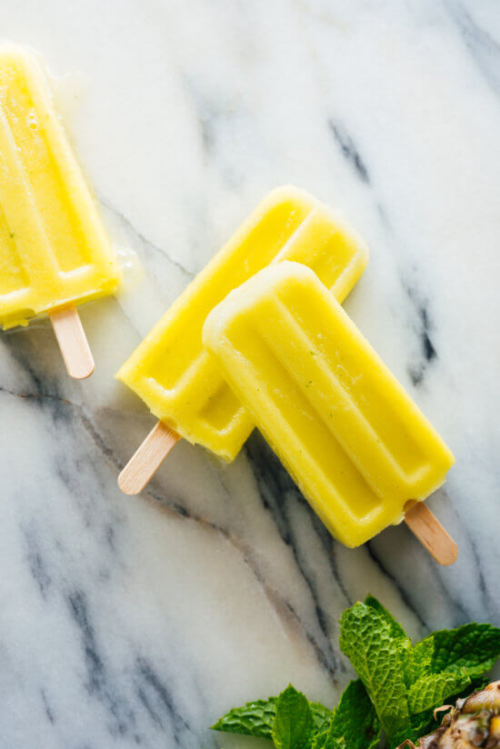

Pineapple Mint Popsicles

Recipe by Cookie and Kate
Description
These Pineapple Mint Popsicles will be the star of your summer with how easy and tasty they are.
Ingredients
- 1 pound frozen pineapple chunks, defrosted completely in the refrigerator
- 1 tablespoon lightly packed fresh mint leaves, to taste
Steps
- In a blender, combine the thawed pineapple and mint. Blend until completely smooth. Taste, and add a few more mint leaves if you’d prefer more minty flavor. Blend again.
- Pour the mixture into your popsicle molds, insert popsicle sticks. Freeze until frozen solid. Enjoy!
Home